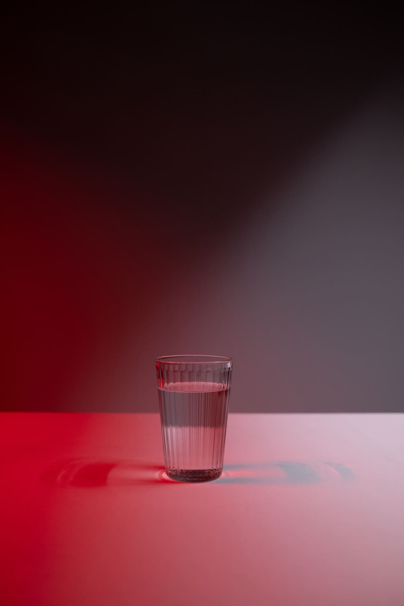
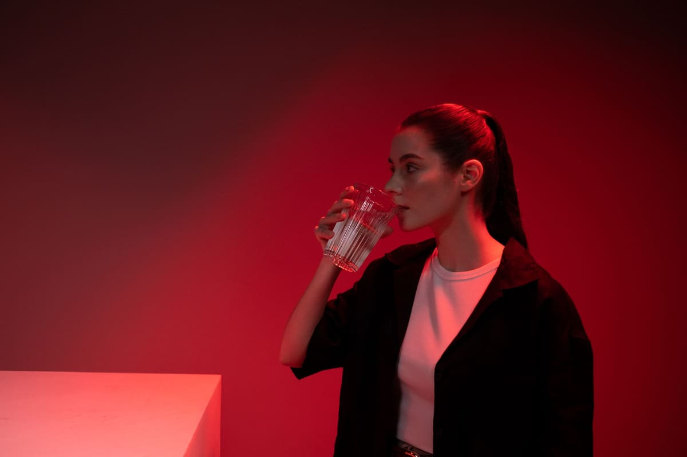
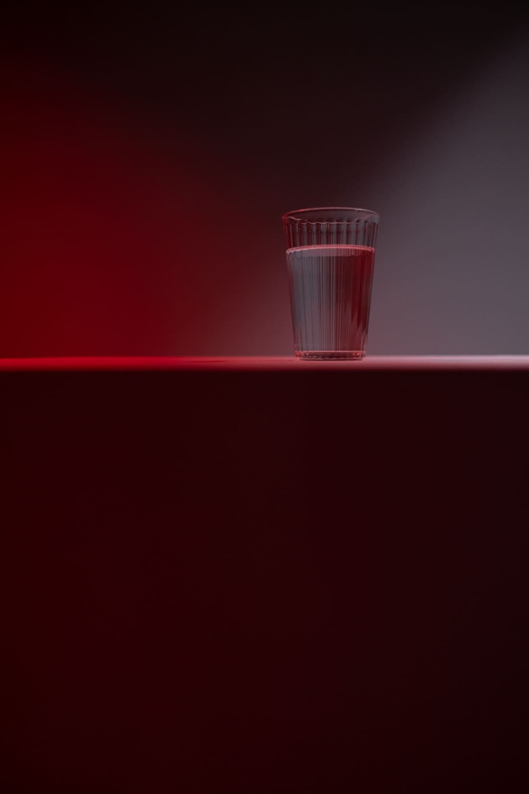
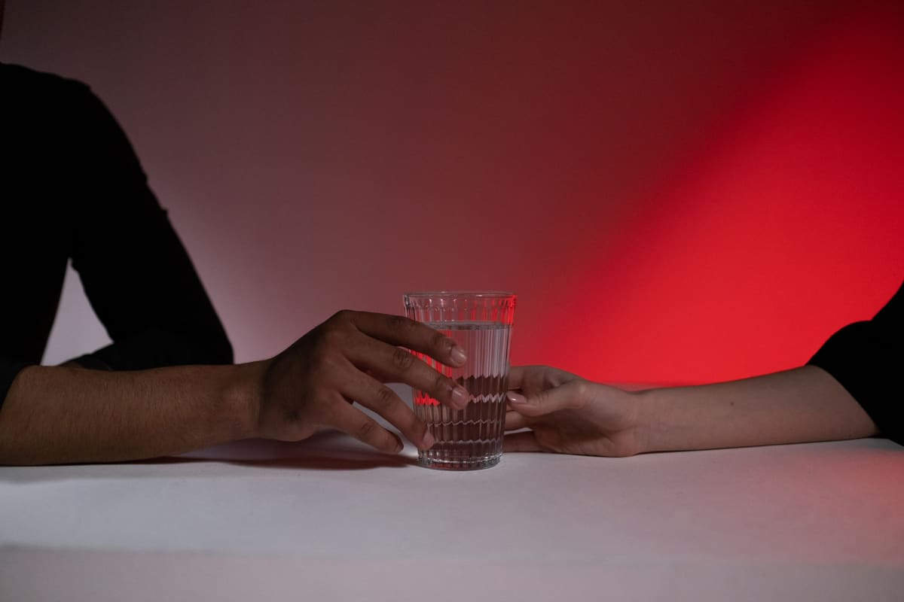
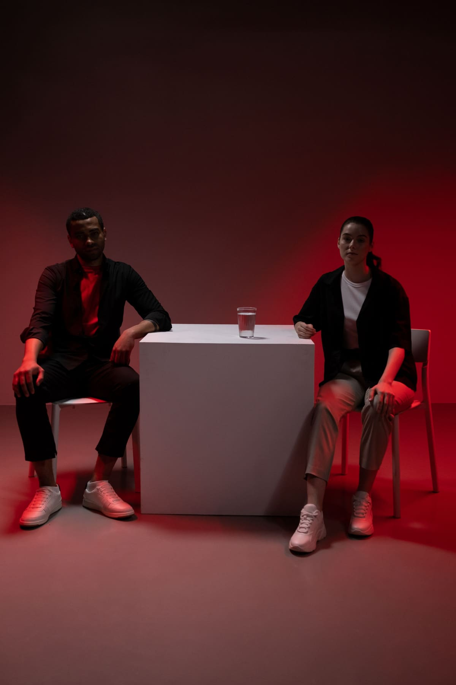
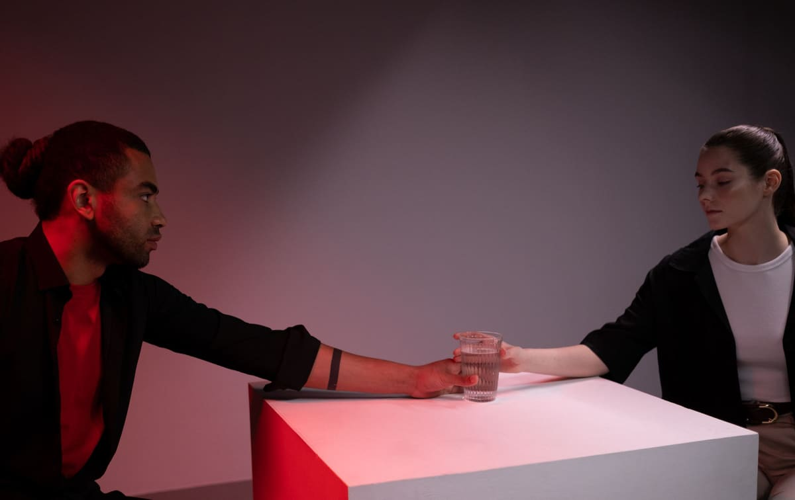
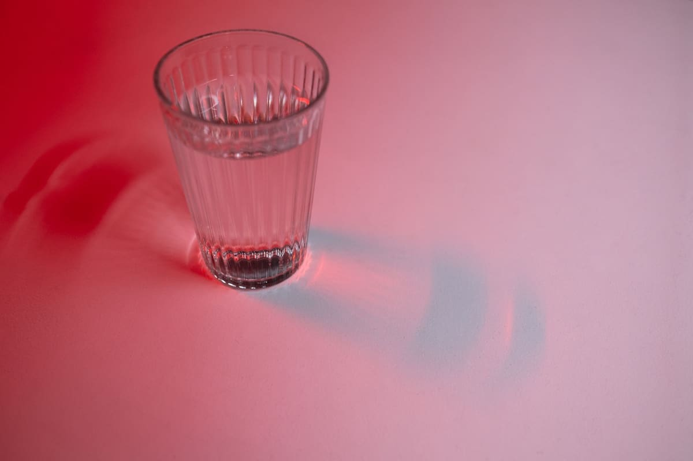
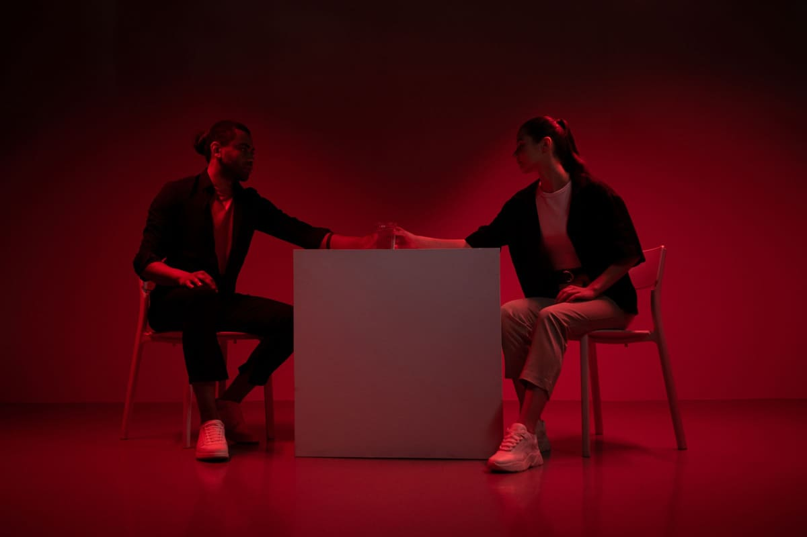
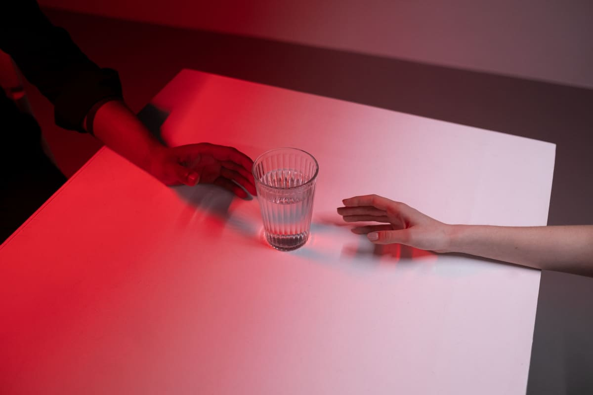

Shoot 01 of 06 · Brands & objects
The glass of water
A launch campaign for a drinks brand, built on one glass of water and one red light.
- Photographs
- Ron Lach / Pexels
- The session
- 12 frames, 4 selects, a 0:33 film
- Direction
- Red light across a grey set, two models in black, a white table. The glass stays the brightest thing in every frame.
- Where it could run
- Launch banner, product page, a feed sequence and a short film.
01 · The contact sheet
Every frame from the day.
All 12 frames, numbered. Red squares mark our four selects. Press Pick on any frame to add it to your brief.
-

-

-

-

-

-

-

-

-

-

-

-



Our selects: 4Your picks: 0
02 · The selects
Four frames, in order.
The edit as it would run: one frame across the page, a pair, then one on its own.
03 · Outputs
One frame, three places.
Frame 02, cropped for a website banner, a feed post and a story. Each crop is centred on the subject, so nothing that matters is cut.
The film from the same session
0:33, silent, by Ron Lach. It loads only when you press play, and the same clip runs as a 9:16 story.